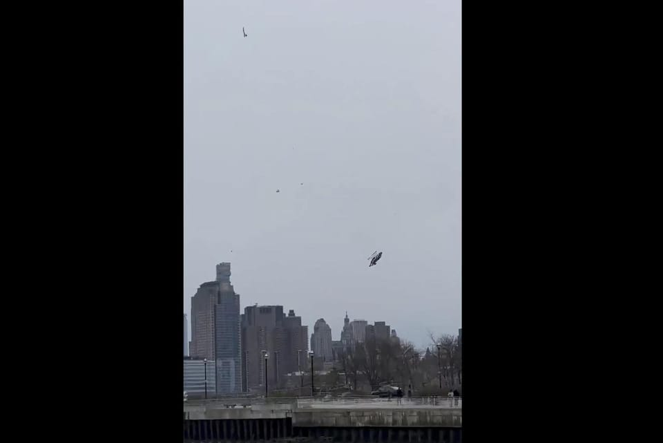

世界苦茶04月11日新闻 | 38条 | 习近平将对东盟三国开展周边命运共同体攻势

习近平将对东盟三国开展周边命运共同体攻势 | 欧洲暂停对美关税反制 | 北京将现极端大风天气 | 美国与15国优先进行关税协商 | 中国将减少美国电影进口 | 美国将与伊朗直接开展核谈判
三个水枪手
苦茶数据
美元兑人民币：7.32（昨日7.35，前日7.38）
美元兑日元：143.69（昨日146.93，前日146.64）
上证指数：3243（昨日3223，前日3145）
标普500指数：5268（昨日5456，前日4982）
比特币：80778（昨日82158，前日75606）
布伦特原油：63.86（昨日64.96，前日60.87）
中国新闻
• 习近平将对越南、马来西亚、柬埔寨进行国事访问： 应越南共产党中央委员会总书记苏林、越南社会主义共和国主席梁强邀请，中共中央总书记、国家主席习近平将于4月14日至15日对越南进行国事访问。应马来西亚最高元首易卜拉欣、柬埔寨国王西哈莫尼邀请，国家主席习近平将于4月15日至18日对马来西亚、柬埔寨进行国事访问。
• 澳洲政客小红书争取华裔票 ：澳大利亚5月3日举行大选，政治人物纷纷利用社交媒体，包括小红书等中国应用，以及其他竞选策略来吸引华裔选民的支持。华人社区在即将到来的选举中是一个关键选民群体。澳洲政治人物对中国应用并不陌生，此前曾在选举中使用微信来吸引华裔选民，但小红书如今成了新宠。路透社的统计显示，至少有21名政治人物在小红书上很活跃，其中一些人拥有成千上万的粉丝。
• 中方回击特朗普等待电话言论 ：美国总统特朗普称，在与中国达成协议方面，正等着中国的电话，中国外交部驻港公署对此严词回应，野蛮人永远不要指望等到中国的电话。特朗普星期二在社交平台Truth Social发文称：“中国也迫切希望达成协议，但他们不知道如何开始。我们正等待他们的电话。一定会实现的！”中国外交部驻港公署在香港《南华早报》网站星期四发布的信件中，痛批美国不知如何开始，既不懂如何与中国相处，“更不懂正确的国与国相处之道，倒是醉心于霸凌、讹诈全世界的‘艺术’。我们要正告美方：妄图挥舞关税大棒逼迫世界各国打电话认输的野蛮人永远不要指望等到中国的电话”。
• 北京将现极端大风天气 ：中国首都北京市将出现“陆地罕见”极端大风，市长殷勇主持召开防范应对部署会，指本次大风天气极端性强、持续时间长，要求确保群众生命财产安全和城市运行平稳有序。综合《新京报》《北京青年报》报道，北京市气象局星期三晚发布重要天气提示，星期五下午至星期天，北京将出现一次极端大风、强降温天气过程。此次大风极端性强、持续时间长、影响范围广、致灾性强，星期六白天为风力最强时段。报道称，预计北京星期六白天平均风力将达六级左右，平原地区阵风九级至11级，西部、北部阵风11级至13级，山区局地阵风13级以上。
• 中国在秘密会议上间接承认对美国基础设施进行了黑客攻击 ： 据了解谈话内容的现任和前任美国政府官员透露，去年12月在日内瓦举行的半天秘密会议上，中国外交部高级网络官员王磊表示，这些基础设施黑客攻击是由于美国对台湾的军事支持造成的。这是中国首次发出此类信号，令美国官员感到震惊。而过去中国官员常常将这项被称为 “伏特台风” 的行动归咎于犯罪团伙，或指责美国想得太多。在中方作出以上发言前美国曾强调，中国似乎不了解预先部署民用关键基础设施的危险性，以及美国会将此视为战争行为的程度，并怀疑中国政治和军事领导层（包括习近平）是否充分了解黑客活动。
亚太印太新闻
• 韩国与叙利亚建交 ：韩国与叙利亚于11日建立外交关系。韩外长10日访问大马士革敲定建交协议，并与叙过渡总统沙拉会面。韩国至此已与除朝鲜外的其余191个联合国成员国建交。叙利亚与朝鲜于1966年建交。2011年叙利亚内战开始后，两国关系逐渐密切，朝鲜向阿萨德政权提供了大量间接和直接的军事支持。
• 韩国宪法法院驳回朴性载弹劾 ：韩国宪法法院驳回对停职的法务部长官朴性载的弹劾。朴性载得以立即复职。新华社引述韩国联合通讯社的报道说，宪法法院星期四下午就朴性载弹劾案开庭宣判，八名法官一致同意驳回对其的弹劾。宪法法院说，无法找到证据或客观资料证明朴性载通过暗示性、默许性的同意帮助总统宣布紧急戒严。
• 李在明宣布参选韩国总统 ：韩国最大在野党共同民主党前党首李在明发布竞选宣传片，正式宣布参加第21届韩国总统选举。李在明在星期四上午发布的视频中说：“无数普通人都怀揣希望，梦想着幸福生活的世界，难道不是真正的春天吗？我想创建一个真正的大韩民国，而不是空有其名的大韩民国。”根据共同民主党党章规定，参加总统选举必须辞去党内职务，因此，李在明星期三宣布辞去共同民主党党首职务。
科技新闻
• 据称Meta曾根据青少年情绪状态投放广告： Meta的举报人萨拉·温-威廉姆斯，曾任脸书全球公共政策总监，也是最近出版的揭露内幕书籍《粗心的人》的作者，她在周三的证词中告诉美国参议员，Meta公司曾积极地根据青少年的情绪状态向他们投放广告。在回答参议员玛莎·布莱克本的提问时，威廉姆斯承认，Meta公司曾向13至17岁的青少年在情绪低落或抑郁时投放广告。她告诉司法委员会下属的犯罪和恐怖主义小组委员会的参议员们：“Meta 能够识别出青少年何时感到无价值、无助或失败，然后将这些信息分享给广告商。广告商明白，当人们对自己感觉不好时，往往是推销产品的最佳时机，人们更有可能购买东西。例如，当年轻女孩对身材自信产生担忧时会向她们投放减肥广告。”
• Waymo将在东京启动自动驾驶出租车试运行： 美国谷歌母公司Alphabet旗下的Waymo等推出的自动驾驶汽车10日在东京亮相。着眼于在日本引入自动驾驶出租车，计划近期启动实证运行，出租车巨头 “日本交通” 的乘务员将在东京都中心地区驾驶车辆进行数据收集。此外Waymo还同开展打车APP业务的公司“GO”进行合作。二十五辆车将投入测试，通过车上安装的摄像头和雷达等收集道路环境等地图数据，使自动驾驶技术适应日本的交通规则。出租车业界面临司机短缺的难题，Waymo希望此次测试有助于今后在日本引入自动驾驶出租车。
• 中国半导体行业协会4月11日发文澄清：集成电路流片地认定为原产地： 无论已封装或未封装，进口报关时的原产地以“晶圆流片工厂”所在地为准进行申报。知情人士说，英伟达CEO黄仁勋4月4日出席特朗普海湖庄园筹款宴，促请其暂缓将H20芯片列入对中国的出口管制。
财经新闻
• 美考虑15国关税协议提议 ：白宫国家经济委员会主任哈塞特说，美国正在考虑来自15个国家的关税协议提议，并与一些国家已接近达成协议。路透社报道，哈塞特星期四在白宫对记者说：“美国贸易代表办公室告诉我们，现在约有15个国家提出明确的提议，我们正在研究和考虑，并决定这些提议是否足够好，能够提交给总统。”哈塞特说，政府贸易政策的主要负责人将于当天晚些时候在白宫开会，“确保那些对最终达成协议至关重要的国家是我们首先考虑的国家”。 （翻評：台湾、日本都在这个名单里。）
• 中国将减少美影片进口 ：为应对美国升级对华关税，中国国家电影局公告，将减少美国影片进口数量。中国国家电影局发言人星期四在官网就电影方面应对美升级对华关税答记者问时表示，美国政府对中国滥施关税的错误行径，势必会令国内观众对美国影片好感度进一步降低。发言人指出，中方将遵循市场规律，尊重观众选择，适度减少美国影片进口数量。中国是全球第二大电影市场，中方始终坚持高水平对外开放，将引进世界更多国家优秀影片，满足市场需求。
• 欧盟暂停首批反制措施 ：美国总统特朗普暂停对等关税后，欧盟宣布暂停针对美国的首批反制措施90天。路透社报道，欧盟星期四作出上述宣布。欧洲委员会主席冯德莱恩说，进一步应对措施的准备工作仍在继续。“如果谈判不令人满意，欧盟将采取反制措施。”
• 中国卖家或退出美电商市场 ：中国最大的电子商务协会负责人和多名卖家称，由于美国总统特朗普史无前例的高额关税，在亚马逊上销售产品的中国公司正准备提高在美售价或退出美国市场。路透社星期四报道，特朗普将对中国商品征收的关税从104%提高到125%，使两国的高风险对抗升级。代表3000多名亚马逊卖家的深圳跨境电子商务协会会长王馨说：“这不仅仅是一个税收问题，而是整个成本结构完全被压垮。”王馨指出，关税可能导致海关延误和物流成本上升，任何人都很难在美国市场生存下去。“对于我们从事跨境电商业务的所有人来说，这确实是一个前所未有的打击。”
• 台积电Q1营收同比增长42% ：由于人工智能晶片需求旺盛，全球晶圆代工龙头台积电透露，今年首季营收将同比增长逾40%，表现优于市场预期。据法新社报道，台积电在星期四说，今年首季营收将同比走高42%，至大约8392亿新台币，超越市场预期的8305亿新台币。台积电将在下周，发布完整首季财报。台积电总裁魏哲家也说，2025年将是“又一个强劲增长的年份”，因人工智能相关晶片的需求，持续激增。他估计，全年营收将增长约20%。
• 桥水达利欧促美中关税谈判 ：全球最大对冲基金桥水基金创始人达利欧呼吁美国针对关税课题，与中国达成协议。据路透社星期三报道，达利欧在社交平台X发文提出，美国总统特朗普政府的下一个目标应该是将美国赤字削减至国内生产总值的3%。达利欧就特朗普当天较早前做出的关税决定说：“特朗普决定退一步放弃更糟糕的做法，转而通过谈判解决这些不平衡问题，才是更好的办法。”
• 美经济界为衰退做准备 ：美国总统特朗普把他对数十个贸易伙伴加征的关税暂停90天执行，刺激股市飙升。但他发动贸易战造成的混乱，促使美国企业界正在为经济衰退做准备。从达美航空到沃尔玛公司的首席执行官都警告，悲观情绪扼杀了需求，让未来难以预料。摩根大通大席执行官戴蒙星期三说，随着经济恶化，违约率将会上升。汽车制造商拿出新的折扣或承诺保价，以吸引被关税言论吓跑的消费者。
• 中媒称适度宽松货币政策正合时 ：中国官媒《证券日报》星期四发文，提出进一步实施好适度宽松货币政策正合时宜，并说中国金融机构存款准备金率还有下行空间。《证券日报》在评论文章中说，今年以来“择机降准降息”的表述频繁出现。仅3月份至今，中国央行已经四次公开明确提及“择机降准降息”。高频表态背后，不仅彰显了今年适度宽松的货币政策主基调，也反映了当前经济形势的复杂性、政策工具的灵活性以及宏观调控的审慎性。文章称，虽然当前降准降息的实施也面临着一定约束，但“择机”并非简单的“等待”，而是基于对经济变量、市场预期和外部冲击的实时研判，平衡短期与长期、稳增长与防风险，选择政策工具落地的“最佳时机”，既保留政策空间，也凸显出货币政策灵活适度、精准有效的特点。
• 越南与美磋商对等贸易协定 ：据政府网站公告，越南副总理胡德福与美国贸易代表格里尔在华盛顿会晤，同意启动磋商“对等”贸易协定。胡德福星期一启程前往华盛顿，会见美方贸易官员。越南正寻求与美方达成协议，以避免美国总统特朗普征收的46％关税。公告说，两国考虑尽量取消非关税壁垒。彭博社引述胡德福说，越南希望与美国相关机构合作，将越共中央总书记苏林与美国总统特朗普4月4日的会谈内容具体化，并将继续保持两国经贸关系稳定，“造福两国企业和人民”。
• 美拟再援助农民应对关税战 ：美国农业部长罗林斯说，由于担忧美中贸易战可能对美国农业生产者造成灾难性影响，政府正考虑出台计划为农民提供援助。中国对特朗普的新关税实施报复，宣布将对美关税税率提高至84%。在特朗普第一任期内，其政府曾通过商品信贷公司提供280亿美元用于救助美国农民。这家由政府拥有并运营的实体旨在提升农民收入和农产品价格。罗林斯星期三在白宫对彭博新闻社说：“我们正在再次考虑这个计划，显然，一切选项都在考虑之中，但目前我们正处于一个极度不确定的时期，具体的内容还难以明朗。”
• 白宫澄清对华关税实际税率 ：白宫官员向媒体澄清，美对华关税税率是在二月初的20% 基础上再加征125%，合计税率为145%。
• 美国3月消费者通胀意外降温，但新关税影响显现后通胀或难再改善 ：由于汽油和二手机动车价格降低，3月份美国消费者物价意外下降，但在特朗普总统加倍征收进口中国商品关税之后，温和的通胀读数不太可能持续。美国劳工部公布，3月消费者物价指数(CPI)下降0.1%，为2020年5月以来的首次下降。3月核心CPI同比增长2.8%，是2021年3月以来的最小增幅。通胀数据发布后，交易员押注美联储6月将降息年内料降100个基点。
• 美3月联邦预算赤字降至1610亿美元，净关税总额创2022年9月来最高 ：美国财政部报告称，美国政府3月预算赤字为1610亿美元，较去年同期下降32%，或760亿美元。赤字下降的主要原因是福利支出日历调整，政府收入继续增加。该报告显示，3月净关税总额达82亿美元，较上年同期增加21亿美元，且创下2022年9月以来的最高水平。一位财政部官员表示，以上增长部分归因于特朗普总统自2月以来上调关税。
• 关税暂停未改变美联储立场，决策者在情况明朗前仍将按兵不动 ：多位发言的美联储官员认为，特朗普总统暂停部分新的进口税可能暂时缓解了金融市场的压力，但导致美国经济前景重新调整的条件依然存在，包括经济衰退风险上升和通胀可能升高。美联储古尔斯比称关税带来重大不确定性，若经济重回正轨仍可能降息。达拉斯联储总裁洛根认为，美联储必须防止关税导致更持久的通胀。
• 外管局官员表示，人民币保持适当弹性可有序释放压力，促进市场自我平衡 ：中国国家外汇管理局国际收支司司长最新表态称，中国外汇市场韧性总体增强，抵御外部冲击能力提升。人民币汇率保持适当弹性，可以有序释放压力，促进市场自我平衡。外管局主管的“中国外汇”杂志周四发布他撰写的文章并称，中国经济基本面和外汇市场韧性较强，外汇市场有条件保持基本平衡。
• 中欧拟谈电动车最低价 ：欧盟执委会发言人表示，欧盟和中国已同意研究为中国制造的电动汽车设定最低价格，以此取代欧盟去年加征的关税。该发言人表示，欧盟贸易执委谢夫乔维奇与中国商务部部长王文涛进行了交谈，双方同意研究设定最低价格。中国商务部在一份声明中表示，双方将立即开展电动汽车价格承诺谈判，以及讨论中欧汽车产业投资合作问题。
• 宝马中国销量下滑17.2% ：宝马汽车第一季销售受到中国市场下滑 17.2% 的拖累。在中国，外国高档汽车制造商一直在努力提高销售，因为廉价的本土竞争对手竞争激烈，而且旷日持久的房地产危机打击了消费者的信心。
• 苹果加速印度产iPhone出口 ：消息人士告诉路透，科技巨头苹果为应对特朗普总统的关税，在印度加大了产量后，租用货运飞机将600吨Phone运往美国。一位熟悉计划的消息人士说，该公司游说印度机场当局将南部泰米尔纳德邦钦奈机场的通关时间从30小时缩短到6小时。
俄乌战争
• 美乌矿产协议磋商将举行 ：乌克兰副总理斯特凡尼希娜说，美国和乌克兰就矿产协议进行的技术磋商将在华盛顿展开。路透社报道，斯特凡尼希娜星期四说，美乌团队将于星期五举行会谈，并重申基辅的立场，即任何潜在协议都不会与欧盟或国际货币基金组织援助义务相冲突。“与乌克兰进行的任何谈判都不能损害乌克兰现有的承诺和义务。”美国总统特朗普正在寻求达成一项双边矿产协议，作为推动结束俄乌战争的一部分。他也将这个协议视为收回对基辅提供的数十亿美元军事援助的一种方式，尽管这笔援助并非贷款。
• 克宫否认中国援俄作战 ：克里姆林宫驳斥乌克兰总统泽连斯基关于中国派兵援俄的言论，并称北京方面持“平衡立场”。路透社报道，克里姆林宫发言人佩斯科夫星期四说，莫斯科并没有将北京拖入俄乌战事。“事实并非如此。中国持平衡立场。中国是我们的战略伙伴、朋友和同志。”泽连斯基星期二说，乌克兰军队在乌东地区抓获两名参与俄罗斯军队作战的中国公民，并指有至少有155名中国公民在乌克兰为俄罗斯作战。
• 欧盟向乌克兰发放10亿欧元冻结俄罗斯资产利息： 乌克兰总理丹尼斯·什米哈尔于4月9日星期三在布鲁塞尔与欧盟委员瓦尔迪斯·东布罗夫斯基斯会晤后宣布，根据七国集团支持的“额外收入加速计划”，乌克兰获得了欧盟10亿欧元的拨款。新闻稿称，这笔款项将用于支付“国家预算重点支出”。这是欧盟通过ERA向乌克兰发放的第三笔款项，资金来自冻结的俄罗斯主权资产的利息收入。这些资产是在俄罗斯于2022年2月全面入侵乌克兰后冻结的。乌克兰仍致力于收回被冻结的俄罗斯央行资产的本金2100亿欧元。
其他新闻
• 美伊将直接谈核协议 ：美国国务卿鲁比奥表示，美国将于本周末与伊朗举行直接谈判，讨论伊朗的核计划。美国特使威特科夫与伊朗高级领导人的谈判定于周六在阿曼举行。
• 以色列飞行员联署被开除 ：约1000名战备和退役飞行员签署公开信，呼吁以色列政府促成人质释放，以色列军方证实参与签署的战备飞行员将被开除。法新社报道，约1000名战备役和退役飞行员日前签署一封公开信，并以整版形式刊登在多家以色列报纸上，直接挑战以色列总理内坦亚胡的政策。公开信内容提及，“即使以结束加沙战争为代价，也应优先促成人质释放”。
• 法国议长批评马克龙执政 ：尽管法国议会议长布朗-皮韦是法国总统马克龙的盟友，但她在新书中提及对马克龙执政八年的表现感到“极度失望”。法新社报道，布朗-皮韦星期四出版新书《在我的位置》，里头谈到她成为法国史上首位女议长所面临的挑战、她克服的性别歧视，以及她对总统领导风格的评价。她写道：“尽管我对马克龙怀有极大的尊敬，我还是忍不住对他的执政方式感到失望。从一开始，核心人物就通过排斥他人更容易地掌握控制权。”
• 特朗普警告伊朗终止核计划 ：美国总统特朗普警告称，如果伊朗不同意终止核计划，美国将采取军事行动。伊朗反驳称，伊朗可能会驱逐联合国原子能监督机构检查员，或将浓缩铀转移到未公开的地点。特朗普星期三接受福克斯新闻访问时说：“如果需要军事行动，我们就会动用军事力量，以色列显然也会积极参与其中。”特朗普说，他已经为伊朗同意终止核计划设定一个具体的最后期限，但他并未透露时间安排。
• 美议员要求调查特朗普操纵市场 ：美国总统特朗普突然宣布暂停对等关税措施，导致股市飙升，加州民主党参议员希夫呼吁国会调查特朗普是否涉及内幕交易或操纵市场的行为。美国《时代》周刊报道，希夫星期三说：“我会尽力查明真相，‘家族模因币’之类的，都可能涉及内幕交易或谋取私利。我希望很快能搞清楚。”特朗普星期三突然宣布暂停对等关税90天，标普500指数之后大涨逾9%。美国股市也在几分钟内上涨超过7%，最终收盘涨幅超过9%。此前因担忧经济衰退而持续上升的债券收益率有所回落，油价也从下跌中反弹。
• 纽约直升机坠河6人遇难 ：美国纽约一架直升机4月10日在半空中解体后坠入曼哈顿和新泽西州之间的哈德逊河，机上6人全部死亡。当天稍早，两架飞机在华盛顿特区里根国家机场发生碰撞，无人员伤亡报告。其中一架飞机上有多名众议员。